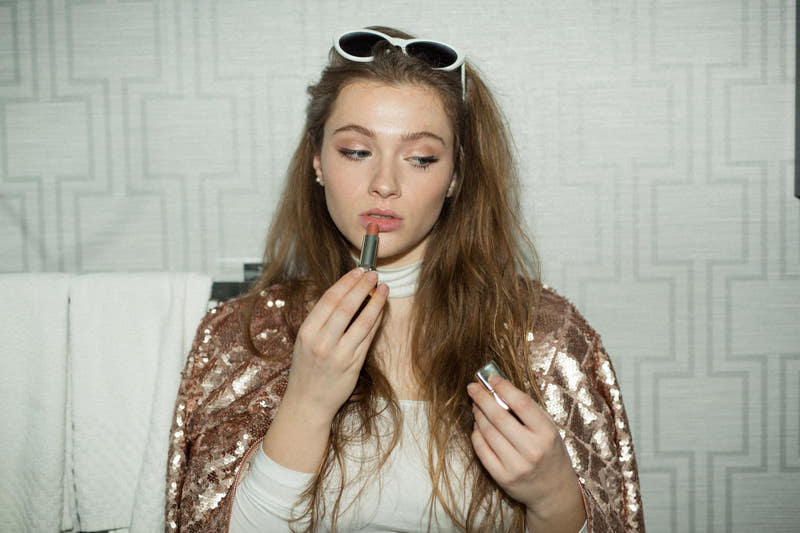
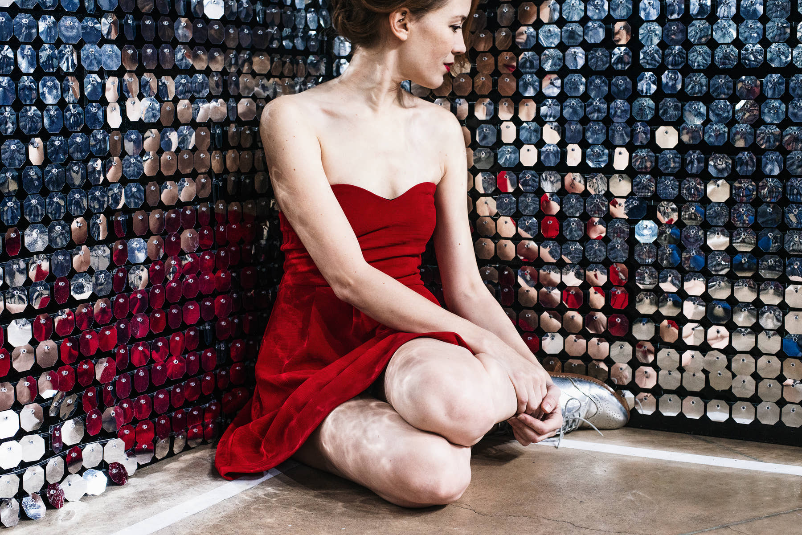
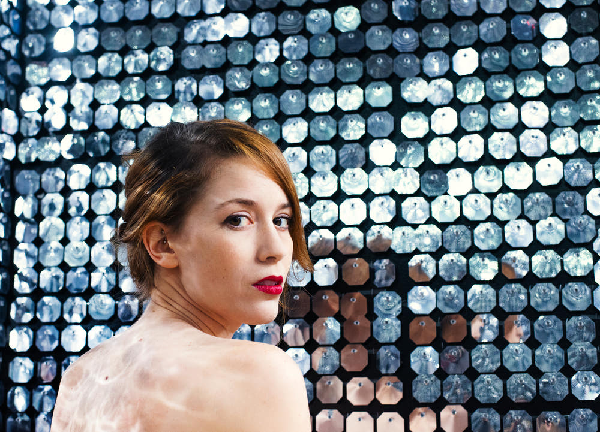
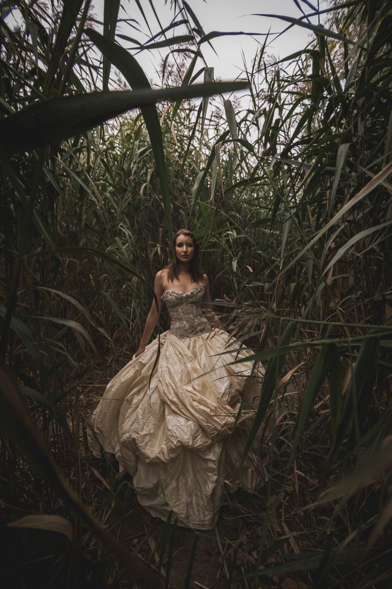
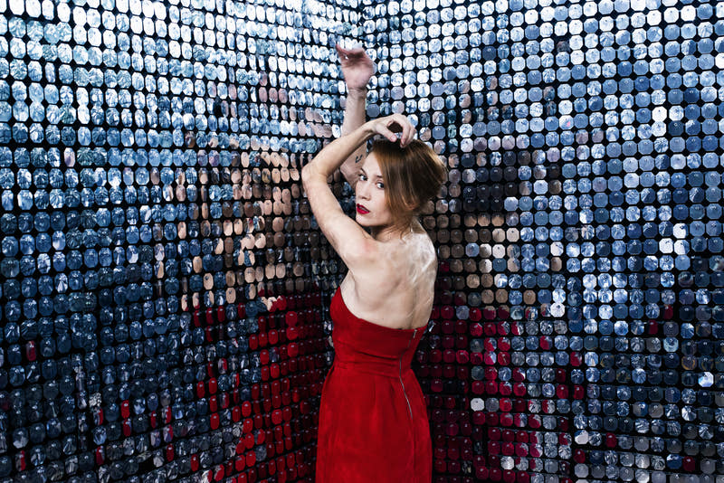
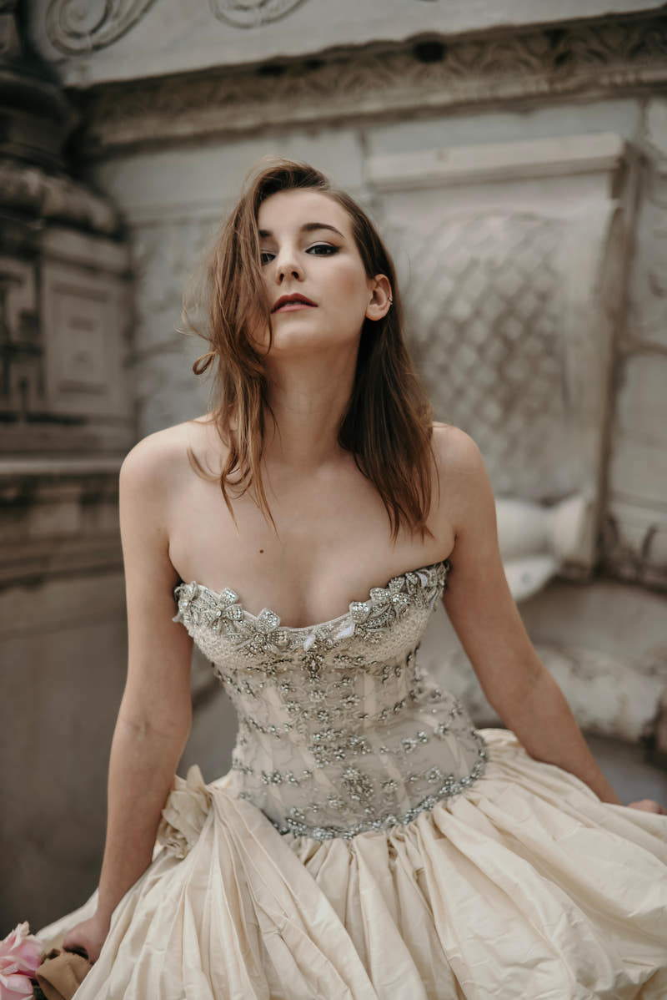
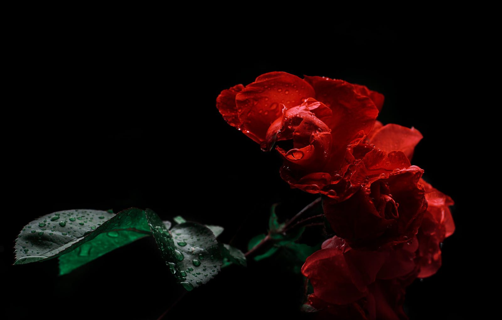
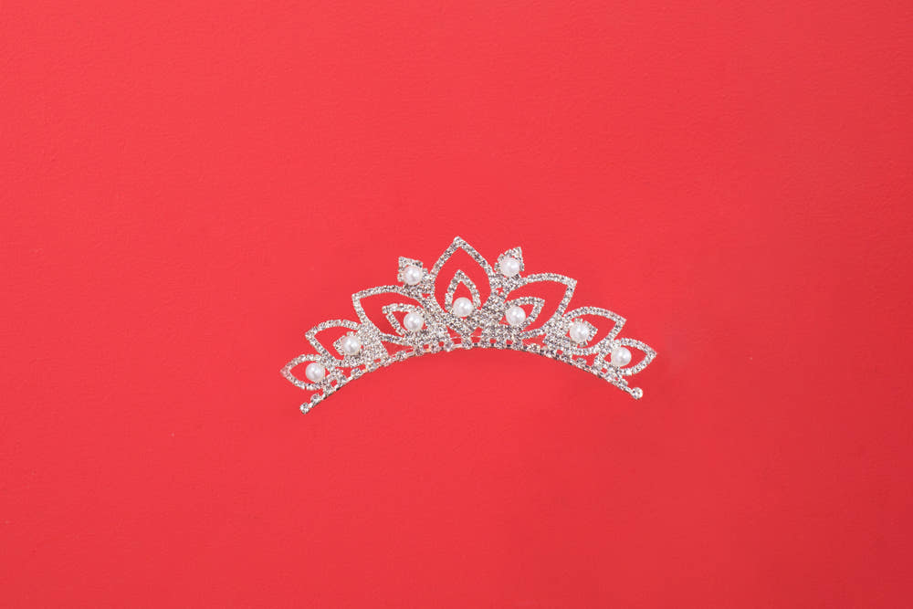
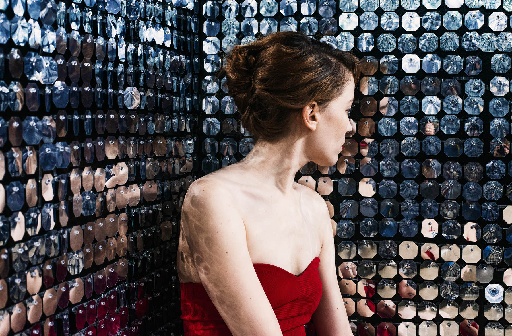

Юная Мисс
14–17 лет
Для тех, кто делает первые шаги на сцене.

Для девушек и женщин от 14 до 45 лет. Сцена, подготовка с профессионалами и большой финал сезона 2027.
Анкеты принимаем до 15 января 2027 года, осталось немного

На конкурсе «Мисс и Миссис Краснодарский край» ценят не только красоту, но и характер, уверенность и умение вдохновлять. Участвовать могут девушки и женщины из любого города и региона.
Участниц ждут фотосессии, репетиции с хореографами и стилистами, новые знакомства и финальное шоу на большой сцене.
до 15 января 2027принимаем анкеты на новый сезон
Несколько месяцев подготовки с командой профессионалов, а в конце — большой финал на сцене.
Профессиональные съёмки в образах конкурса.
Учимся держаться на сцене, красиво двигаться и позировать.
Подбор образов и платьев для выходов на сцену.
Участницы из разных городов и команда конкурса.
Выход на большую сцену перед зрителями и жюри.
Победительницы каждой категории получают титул сезона 2027.

Категорию бот предложит сам по вашему возрасту. В 20–35 лет можно выбрать между «Мисс» и «Миссис».

Для тех, кто делает первые шаги на сцене.

Для девушек, готовых заявить о себе.

Для женщин, которые вдохновляют своим примером.

Корона — это не только красота. Это характер, уверенность и смелость выйти на сцену.

Анкета заполняется в Telegram-боте конкурса и занимает около пяти минут.
Нажмите «Подать анкету», и откроется Telegram-бот конкурса.
Имя, город, возраст, рост, размер одежды и опыт участия в конкурсах.
Портрет и фото в полный рост. Часть фото можно заменить видео.
Организаторы посмотрят анкету и свяжутся с вами по телефону или в Telegram.
Нажмите на фото, чтобы посмотреть его целиком.
Нет. В анкете есть вопрос об опыте, но если его нет — так и напишите. Участвовать можно с нуля.
Да, анкету может подать участница из любого города и региона.
Для вас категория «Юная Мисс» — от 14 до 17 лет. Согласие на обработку данных даёт родитель или законный представитель.
«Миссис» — от 20 до 45 лет. Если вам от 20 до 35, бот предложит выбрать между «Мисс» и «Миссис».
Пять фото или видео в любом сочетании: портрет и фото в полный рост. Видео можно прислать вместо части фото.
Организаторы посмотрят анкету и свяжутся с вами по телефону или в Telegram.

Заполните анкету в Telegram. Это займёт около пяти минут, а организаторы ответят сами.
Подать анкету